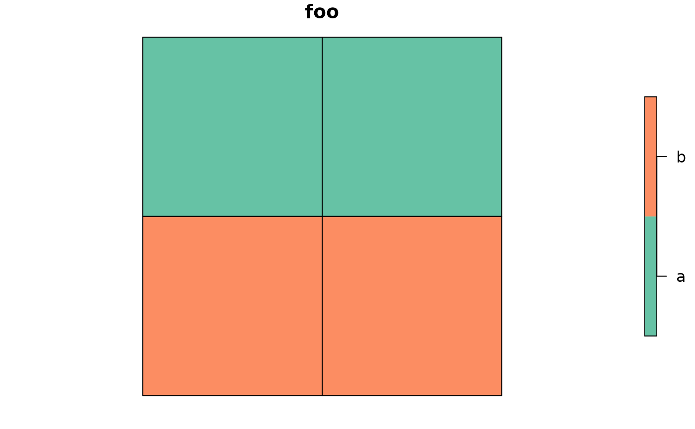

Create a line layer consisting of shared boundaries with no attribute data
Source:R/inner_lines.R
ms_innerlines.RdCreate a line layer consisting of shared boundaries with no attribute data
Arguments
- input
input polygons object to convert to inner lines. One of:
geo_jsonorcharacterpolygons;SpatialPolygons*;sforsfcpolygons object
- ...
Arguments passed on to
apply_mapshaper_commandsforce_FCshould the output be forced to be a FeatureCollection (or sf object or Spatial*DataFrame) even if there are no attributes? Default
TRUE. If FALSE and there are no attributes associated with the geometries, a GeometryCollection (or Spatial object with no dataframe, or sfc) will be output.sysShould the system mapshaper be used instead of the bundled mapshaper? Gives better performance on large files. Requires the mapshaper node package to be installed and on the PATH.
sys_memHow much memory (in GB) should be allocated if using the system mapshaper (
sys = TRUE)? Default 8. Ignored ifsys = FALSE. This can also be set globally with the option"mapshaper.sys_mem"quietIf
sys = TRUE, should the mapshaper messages be silenced? DefaultFALSE. This can also be set globally with the option"mapshaper.sys_quiet"
Examples
library(geojsonsf)
library(sf)
poly <- structure('{"type":"FeatureCollection",
"features":[
{"type":"Feature",
"properties":{"foo": "a"},
"geometry":{"type":"Polygon","coordinates":[[
[102,2],[102,3],[103,3],[103,2],[102,2]
]]}}
,{"type":"Feature",
"properties":{"foo": "a"},
"geometry":{"type":"Polygon","coordinates":[[
[103,3],[104,3],[104,2],[103,2],[103,3]
]]}},
{"type":"Feature",
"properties":{"foo": "b"},
"geometry":{"type":"Polygon","coordinates":[[
[102,1],[102,2],[103,2],[103,1],[102,1]
]]}},
{"type":"Feature",
"properties":{"foo": "b"},
"geometry":{"type":"Polygon","coordinates":[[
[103,1],[103,2],[104,2],[104,1],[103,1]
]]}}]}', class = c("geojson", "json"))
poly <- geojson_sf(poly)
plot(poly)

out <- ms_innerlines(poly)
plot(out)